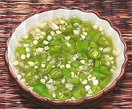

|
Chili Lime SauceThailand - Nam Pla Prik | ||||
| Makes: Effort: Sched: DoAhead: |
6 oz ** 20 min Best |
An essential Thai table condiment - spoon both liquid and chili slices onto your food. I usually use the vinegar version (Chili Vinegar Sauce) because many Thai dishes already have plenty of lime juice, and it's less perishable. | |||
|
|
1-1/2 1 1/2 3 |
oz cl c T |
Thai Chilis (1) Garlic (large) Lime Juice Fish Sauce |
|